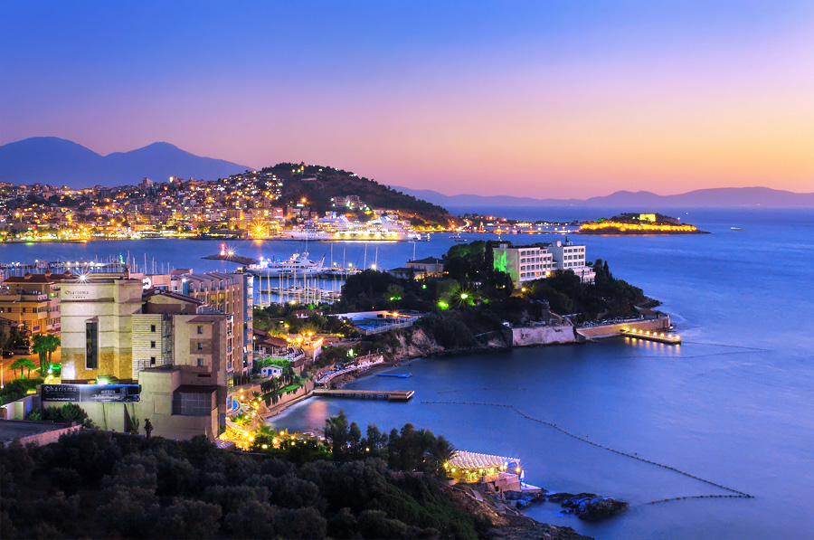
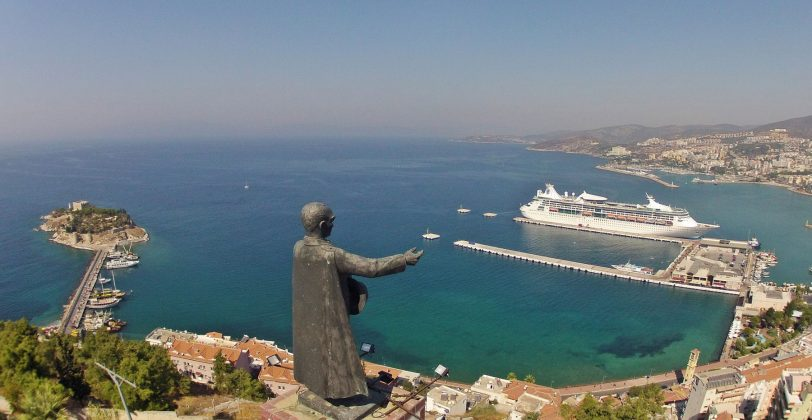

KUŞADASI

Kuşadası is county of Aydın City and is situated 71km northwest of Aydın and 95 km from İzmir City centres respectively.
Kuşadası, located on the Aegean shore, is one of the prominent tourism spots of Turkey.
The surface area of Kuşadası is 264 Km2 and the registered population is 103.849 people, according to census records carried out in 2016.
It is presumed that the first establishment was on the Yılancı Cape near Kuşadası by Ionians under the name of “Neopolis” and was under the ruling of Ephesus.
The city was founded on the skirts of Pilavtepe known as Andızkulesi initially. This Byzantium shore was dominated by the Venetians and Genoese for a short period of time and
due to the city access difficulties Kuşadası was moved from its existing location of Andızkulesi to its current location of Yeni İskele (Scala Nuova).
Kuşadası Bay was named
after the city and its periphery were known as art and culture centres. This territory has been home to multiple civilizations since its establishment in the ancient times.

Whereas Lelegs were ruling the area around 30000 B.C., Aiols and Ions ruled around 11th Century B.C. and 9th Century B.C.,
respectively. The area between Greater Menderes and Gediz Rivers was referred to as ‘Ionia’ in the ancient times. Merchant and sailor Ions prospered in short period of time
owing to overseas commercial activities and gainedsuperior political strength due to this. This civilization also established 12 cities known as “Ionian Colonies” in the history.
Kuşadası was one of the important harbours of Anatolia as a gate to Mediterranean and was called “Neopolis” in the antique period. Around 7th Century B.C., Lydian, with its
capital city of Sardes, began dominating the region.During the Independence War, Kuşadası was invaded by Italians in the period of 1919-1921; then upon their retreat, occupied
by Greece. Finally, it was cleared from all enemy invasion on September 7th, 1922, the date which has been declared Kuşadası Independence Day.